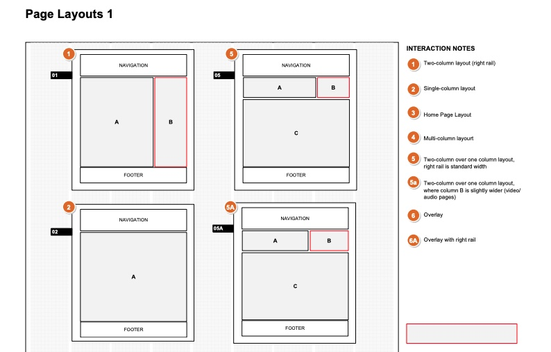
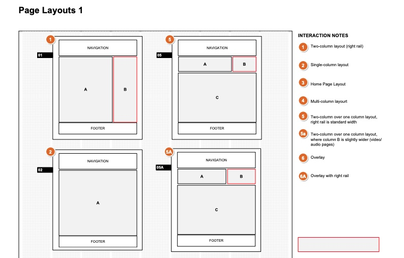

Lord Abbett · Digital Strategy
Rethinking
Digital Presence
A two-year, 7,000-page digital overhaul for one of America's oldest mutual fund companies.
The Challenge
Lord Abbett, one of the oldest mutual fund companies, needed a digital overhaul. They approached HNW — an agency specializing in High Net Worth clients — for advice and help. After an initial assessment, we realized the complexity of the project. With millions of active users, many with dramatically different needs, and several third-party vendors interfacing in real time with data, we had quite a complex task on our hands. This project took about two years and approximately 7,000 pages of documentation to complete.
 

Information Architecture Review
We needed to think carefully about the transition from the old system. After careful user research and analytics review, many brainstorming sessions and prototype testing, we simplified and organized navigation around user priorities rather than content categories.
The goal was not to surprise users with entirely new navigation, but rather to introduce well-thought-through modifications to an existing system. This was also a consideration for keeping the project budget in check.
Dealing with Data
There was a lot of data. Working closely with the client team and interviewing many users, we defined new data hierarchies — bringing the most important information to the front. Additionally, our design needed to accommodate required number length and provide clear indicators of change. We also added variations in data shown to different user groups.
A Lot of Transactions
Financial transactions presented their own design challenges. We needed to design clear, trustworthy transaction flows that accommodated a wide range of financial instruments and user types — from individual investors to institutional financial advisers — while maintaining consistency across the entire platform.
Tying It All Together
In order to help our client manage the system after we finished, we designed and built a robust Component Object Library where the treatment of all design objects was described in a hierarchical system — both from UX and technical points of view.
Adding Mobile
To add to the overall user experience, we designed several apps for different user groups — individual investors and financial advisers. One of the key challenges was ensuring continuity of experience across devices, especially in relation to financial transactions.